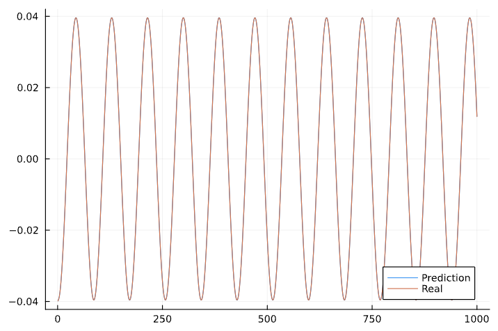
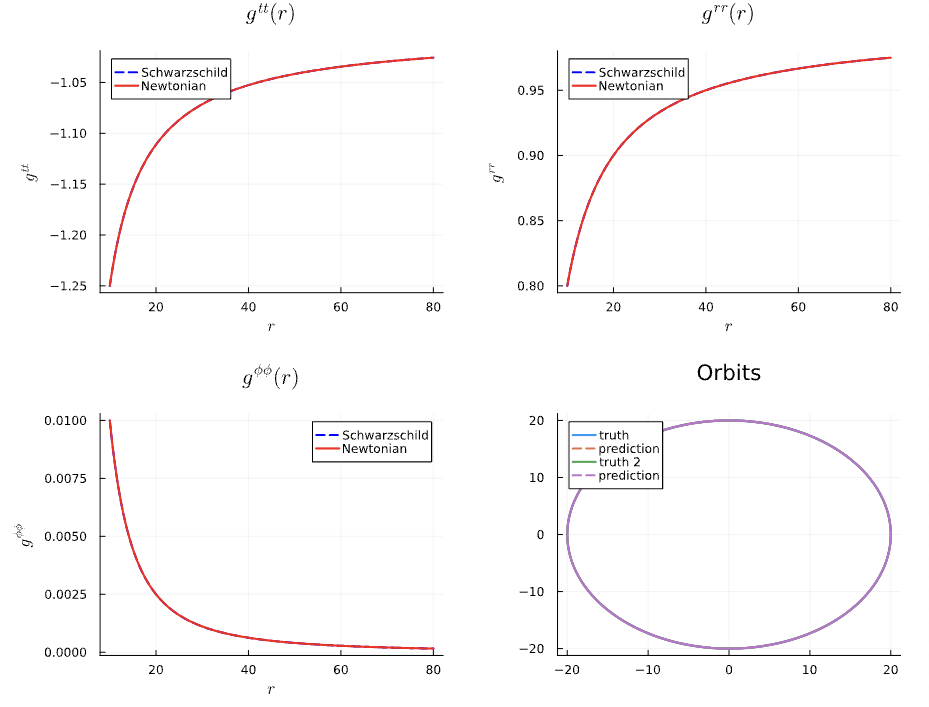

Sanity Checks
We can run several sanity checks to ensure that our Neural ODE is indeed learning the Schwarzschild Metric. In this module, we examine the following sanity checks:
If we use the Schwarzschild Metric as the base model for the Neural ODE, there should be nothing for the network to learn. We are considering training data generated by using schwarzschild geodesics (no dissipation, only conservative dynamics). For this particular sanity check, we consider only circular orbits, the simplest kind of orbit. We can frame this in one of two ways. We can have multiplicative corrections as follows:
# Base Metric: Schwarzschild Metric
g = [
-f^(-1)*f_tt_NN_correction 0 0 0;
0 f*f_rr_NN_correction 0 0;
0 0 0 0;
0 0 0 r^(-2)*f_ϕϕ_NN_correction
]In the multiplicative case, the corrections that the neural network should learn is 1. Alternatively, we can have additive corrections as follows:
# Base Metric: Schwarzschild Metric
g = [
-f^(-1)+f_tt_NN_correction 0 0 0;
0 f+f_rr_NN_correction 0 0;
0 0 0 0;
0 0 0 r^(-2)+f_ϕϕ_NN_correction
]The additive corrections should be 0 if the neural network learns "nothing" correctly. Ideally, this sanity check would be the simplest thing for the neural network to do: in the multiplicative correction case, it should learn no more than 1. Likewise in the additive correction case, it should learn simply 0.
First of all, when conducting sanity checks, you want to strip the problem of all its complexity. For starters, we make the neural network extremely simple.
NN_Conservative = Chain(
Dense(1, 1, tanh), # Input: r only
Dense(1, 1, tanh),
Dense(1, 3), # Output: Corrections for [g^tt, g^rr, g^ϕϕ]
)We will treat the corrections as multiplicative for this first case, as follows:
g = [
-f^(-1)*f_tt_NN_correction 0 0 0;
0 f*f_rr_NN_correction 0 0;
0 0 0 0;
0 0 0 r^(-2)*f_ϕϕ_NN_correction
]This Neural Network has only 10 parameters:
Chain(
layer_1 = Dense(1 => 1, tanh), # 2 parameters
layer_2 = Dense(1 => 1, tanh), # 2 parameters
layer_3 = Dense(1 => 3), # 6 parameters
) # Total: 10 parameters,
# plus 0 states.We initialize the NN weights and biases for the hidden layers, except for the final layer:
for (i, layer) in enumerate(NN_Conservative_params)
if ~isempty(layer)
if i == length(NN_Conservative_params) # Final layer
layer.weight .= 0
layer.bias .= 0 # Force output near 0
else # Hidden layers
layer.weight .= 0.1 * randn(rng, eltype(layer.weight), size(layer.weight))
layer.bias .= 0.1 * randn(rng, eltype(layer.bias), size(layer.bias))
end
end
endWhen we do this, here's what we find for the NN parameters (conservative NN) after initialization (but before training):
layer_1 = (weight = [0.23716215388290493;;], bias = [0.12095544082478167])layer_2 = (weight = [0.03983070751935526;;], bias = [-0.16211640815748582])layer_3 = (weight = [0.0; 0.0; 0.0;;], bias = [0.0, 0.0, 0.0]))
When you plot the initial solution to the ODEs, we find exact agreement (as expected, since our base model is the Schwarzschild metric!)

Now when we plot the predicted metrics and orbit after initialization (but before training), we find exact agreement, as expected:

Our loss function is simply a mean-squared error between the predicted and true waveform:
function loss(NN_params; saveat=tsteps)
tspan = (saveat[1],saveat[end])
pred_soln = solve(remake(prob_nn_dual, p = NN_params, tspan=tspan), Tsit5(),
saveat = saveat, dt = dt, adaptive=false, verbose = false, sensealg=BacksolveAdjoint(checkpointing=true))
pred_waveform_real, pred_waveform_imag = compute_waveform(dt_data, pred_soln, mass_ratio)
loss = ( sum(abs2, waveform_real_ecc .- pred_waveform_real))
return loss
endWhen we run our loss function on just the initial solution, we get 2.25e-7. Now we run the training process, after which we obtain these results:

I ran through 4 iterations: optimization_increments = [1, 2, 12, 20]. Over these four iterations, here's how the weights and biases changed over time:
layer_1 = (weight = [0.2371808185363373;], bias = [0.120935736109229])layer_2 = (weight = [0.03982656907286769;], bias = [-0.16213122300485072])layer_3 = (weight = [-1.821512530359164e-5; -1.0175274439859679e-5; 8.716160136546225e-7;], bias = [9.8766420116128e-6, 5.723394566465591e-6, 3.481497345221852e-6]))
layer_1 = (weight = [0.23718676030213381;], bias = [0.12092385329517617])layer_2 = (weight = [0.03983349725191167;], bias = [-0.1621299634300346])layer_3 = (weight = [-2.487679834028046e-5; -2.887058705740126e-5; 1.0738885848191339e-6;], bias = [-4.71782709892314e-6, 7.837322991384513e-6, 2.537287450937874e-6]))
layer_1 = (weight = [0.2371894925389875;], bias = [0.12093772915528389])layer_2 = (weight = [0.03983157793305357;], bias = [-0.16213630211015895])layer_3 = (weight = [-1.6052012110502056e-5; -3.96908865801902e-5; -9.619462849749647e-6;], bias = [-2.1939207002792404e-5, 1.500639545614688e-6, -2.168304595713335e-5]))
layer_1 = (weight = [0.23718368381374658;], bias = [0.12094224166402442])layer_2 = (weight = [0.03983587381877536;], bias = [-0.16213807102352437])layer_3 = (weight = [-9.10753409970219e-6; -4.110947128717602e-5; -1.749976849031467e-5;], bias = [-1.7950002563821174e-5, 1.4704911668732934e-5, -1.9016787781020368e-5]))
Here are the loss function and state variables post-training for the sanity check:


After printing f_tt_pred, f_rr_pred, and f_\phi\phi_pred, the corrections to the $g^{tt}, g^{rr}, g^{\phi\phi}$, we find:
julia> f_tt_pred
400-element Vector{Any}:
0.9999831633432387
0.999983162958138
0.9999831626034161
0.9999831622767038
0.9999831619758125
0.9999831616987213
0.999983161443564
⋮
0.9999831584900172
0.9999831584900172
0.9999831584900172
0.9999831584900172
0.9999831584900172
0.9999831584900172f_rr_pred
400-element Vector{Any}:
1.0000197298726115
1.0000197281342853
1.0000197265330875
1.0000197250583238
1.000019723700115
1.0000197224493381
1.0000197212975706
⋮
1.000019707965401
1.000019707965401
1.000019707965401
1.000019707965401
1.000019707965401
1.000019707965401f_pp_pred
400-element Vector{Any}:
0.9999831223324658
0.99998312159251
0.9999831209109258
0.9999831202831609
0.9999831197050103
0.9999831191725903
0.9999831186823158
⋮
0.9999831130071919
0.9999831130071919
0.9999831130071919
0.9999831130071919
0.9999831130071919
0.9999831130071919Thus, the sanity check has been passed for multiplicative corrections for a circular orbit! Now we consider additive corrections!
# Base Metric: Schwarzschild Metric
g = [
-f^(-1)+f_tt_NN_correction 0 0 0;
0 f+f_rr_NN_correction 0 0;
0 0 0 0;
0 0 0 r^(-2)+f_ϕϕ_NN_correction
]When we run the sanity check for additive corrections with three corrections for $g^{tt}, g^{rr}, g^{\phi\phi}$, here are the results:

Now if we return only two corrections, for $g^{rr}$ and $g^{\phi\phi}$ and lock in $g^{tt}$, we obtain